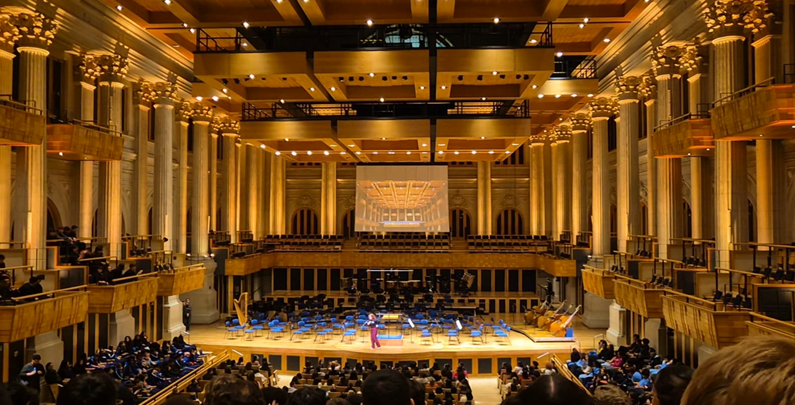
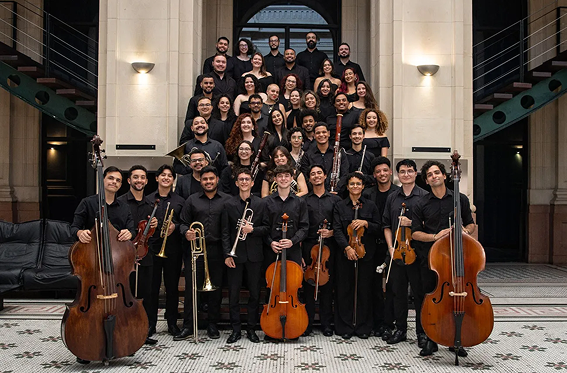
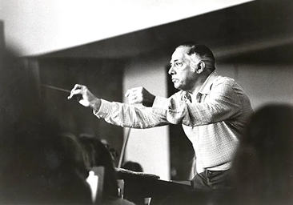
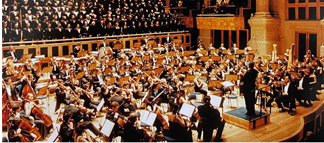

Excelência
Buscar os mais altos padrões de qualidade em apresentações, projetos, gestão e iniciativas culturais.

Organização social de cultura
Como tudo começou
A história da Fundação Osesp começa antes mesmo de sua criação. Em 1954, nasceu a Orquestra Sinfônica do Estado de São Paulo (Osesp), que ao longo das décadas se consolidou como uma das principais orquestras da América Latina, conquistando reconhecimento pela qualidade de suas apresentações e pelo compromisso com a música de concerto.
Um dos momentos mais importantes dessa trajetória aconteceu em 1999, com a inauguração da Sala São Paulo. Instalada no edifício histórico da antiga Estação Júlio Prestes, a sala rapidamente se tornou referência mundial pela excelência de sua acústica e pela preservação de seu patrimônio arquitetônico, oferecendo ao espaço cultural a estrutura ideal para abrigar a Osesp.
Com o crescimento da orquestra e a ampliação de seus projetos culturais e educacionais, surgiu a necessidade de uma gestão mais especializada e sustentável. Foi nesse contexto que, em 2005, foi criada a Fundação Osesp, uma organização sem fins lucrativos responsável por administrar a orquestra e a Sala São Paulo.
Desde então, a Fundação atua para garantir a continuidade desse legado, promovendo a música de concerto, incentivando a formação de novos talentos e ampliando o acesso da população à cultura. Seu trabalho institucional combina excelência artística, responsabilidade na gestão e compromisso com a democratização do acesso à cultura.

A Fundação Osesp existe para promover, apoiar e difundir a música sinfônica, coral e de câmara, tornando a cultura cada vez mais acessível à população.
Mais do que realizar concertos, a instituição acredita que a música é uma ferramenta de educação, desenvolvimento humano e transformação social.
A Fundação Osesp acredita que a música tem o poder de transformar pessoas, aproximar comunidades e fortalecer a cultura. Para que essa missão seja cumprida, suas ações são guiadas por princípios que orientam a gestão e o relacionamento com o público.
Buscar os mais altos padrões de qualidade em apresentações, projetos, gestão e iniciativas culturais.
Desenvolver novas formas de promover a música, ampliar o acesso e criar experiências relevantes.
Utilizar a música como ferramenta de educação, inclusão e transformação social.
Atuar com responsabilidade, respeito e coerência, fortalecendo relações de confiança.
Conduzir todas as atividades com honestidade, respeito e compromisso com o interesse público.
Garantir uma gestão clara e responsável, prestando contas de suas ações.
A Fundação Osesp é uma Organização Social que atua em parceria com a Secretaria da Cultura, Economia e Indústria Criativas do Estado de São Paulo. Sua estrutura reúne um Conselho de Administração, uma Diretoria Executiva e diferentes comitês de governança.
Esse modelo permite unir investimentos públicos e privados para manter a qualidade artística, preservar a Sala São Paulo e desenvolver projetos culturais de longo prazo.
Levando música brasileira para o mundo
A Fundação Osesp desempenha um papel fundamental no fortalecimento da música de concerto no Brasil e na valorização da cultura brasileira dentro e fora do país. Por meio de sua atuação, a instituição contribui para a preservação do patrimônio musical, incentiva a formação de novos públicos e amplia o acesso à cultura.
Além de manter uma programação musical de excelência, a Fundação promove iniciativas que aproximam diferentes públicos da música sinfônica, tornando esse universo mais acessível e democrático.
Transformando vidas por meio da música
Para a Fundação Osesp, a música vai muito além do palco. Ela é uma ferramenta capaz de criar oportunidades, incentivar a educação e aproximar pessoas de diferentes realidades.
Por isso, a instituição desenvolve projetos como a Academia de Osesp, que oferece formação gratuita para jovens músicos, e iniciativas de acessibilidade, que ampliam a participação de públicos diversos.
Reconhecida como uma das principais orquestras da América Latina, a Orquestra Sinfônica do Estado de São Paulo (Osesp) é um dos maiores símbolos da música de concerto no Brasil. Desde sua criação, a orquestra vem desempenhando um papel fundamental na difusão da música clássica, na valorização de compositores brasileiros e na formação de novos públicos, conquistando reconhecimento tanto no cenário nacional quanto internacional.
Mais de sete décadas de música e tradição
A história da Orquestra Sinfônica do Estado de São Paulo (Osesp) começou em 1953, com a realização de seu primeiro concerto. No ano seguinte, em 13 de setembro de 1954, a orquestra foi oficialmente criada por meio da Lei nº 2.733, iniciando sua trajetória como uma das principais instituições culturais do estado de São Paulo.
Nas décadas seguintes, a Osesp passou por diferentes momentos de desenvolvimento. Em 1973, sob a liderança do maestro Eleazar de Carvalho, iniciou um importante processo de reestruturação artística que fortaleceu sua identidade musical e elevou o nível de suas apresentações. Poucos anos depois, em 1978, a instituição passou a adotar oficialmente o nome Orquestra Sinfônica do Estado de São Paulo (Osesp), consolidando sua presença no cenário cultural brasileiro.

Um novo capítulo de sua história começou em 1997, com a chegada do maestro John Neschling, responsável por um amplo processo de modernização da orquestra. Foram implementadas mudanças na gestão, na formação do corpo artístico e na programação musical, elevando o padrão de excelência da instituição e ampliando sua projeção internacional.

Esse período culminou, em 1999, com a inauguração da Sala São Paulo, que passou a ser a sede da Osesp. Reconhecida mundialmente por sua acústica, a sala proporcionou uma estrutura compatível com o nível artístico da orquestra e contribuiu para impulsionar sua presença nos principais circuitos da música de concerto.
Desde então, a Osesp vem consolidando sua posição como uma das mais importantes orquestras da América Latina. Com uma intensa temporada de concertos, turnês internacionais, gravações premiadas e um repertório que valoriza tanto os grandes compositores da música clássica quanto a produção brasileira, a orquestra tornou-se uma referência de excelência artística e um dos maiores patrimônios culturais do país.
Ao longo de sua história, a Osesp contou com maestros que marcaram sua evolução artística e ajudaram a construir sua reputação internacional. Entre eles, destaca-se John Neschling, responsável pelo processo de modernização da orquestra no final dos anos 1990, além de Marin Alsop, primeira mulher a ocupar o cargo de diretora musical da Osesp e uma das regentes mais prestigiadas do mundo. Atualmente, a orquestra segue sob a liderança de maestros convidados e diretores musicais que mantêm o compromisso com a excelência artística e a inovação.
A Osesp é formada por músicos de alto nível, selecionados por meio de processos rigorosos que garantem um corpo artístico altamente qualificado. Além da experiência de seus integrantes, a orquestra investe constantemente na formação de novos talentos por meio da Academia de Música da Osesp, contribuindo para o desenvolvimento de jovens instrumentistas e fortalecendo o cenário musical brasileiro.
Uma trajetória que ultrapassa fronteiras
Ao longo de sua trajetória, a Osesp realizou apresentações em algumas das mais importantes salas de concerto do mundo, participando de festivais internacionais e levando a música brasileira a diferentes países. Suas turnês fortaleceram sua reputação internacional e ampliaram a projeção da música de concerto brasileira.
Além das apresentações internacionais, a orquestra mantém uma intensa temporada anual de concertos, reunindo grandes solistas, maestros convidados e obras consagradas do repertório clássico e contemporâneo.
O repertório da Osesp reúne obras de diferentes períodos e estilos da música de concerto, abrangendo desde compositores clássicos como Mozart, Beethoven e Brahms até importantes nomes da música contemporânea.
Um dos grandes diferenciais da orquestra é o incentivo à música brasileira. A Osesp interpreta, grava e divulga obras de compositores como Villa-Lobos, Camargo Guarnieri, Cláudio Santoro e Almeida Prado, contribuindo para a preservação e valorização do patrimônio musical nacional.
A Sala São Paulo está localizada na Praça Júlio Prestes, em São Paulo, ao lado da estação Júlio Prestes.
A programação da Sala São Paulo conta com concertos e oficinas, apresentações de grupos convidados e visitas guiadas ao espaço. Consulte a agenda e os horários disponíveis para conhecer a arquitetura, a acústica e a história do local.